正式接入：目标图与 Unity Game View
2026-09-24 · 原始运行截图 · 74项EditMode、182项运行检查通过。使用独立测试存档；示例余额、进度不代表现有玩家数据。以下不是手机实机，不是HTML实现的游戏页面。
完整验证与限制 · 实际运行检查 · 经济候选方案
首页：均以390宽显示，保留原图比例
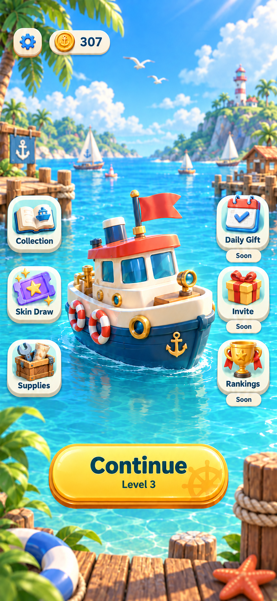
目标首页 · 设计参考，非运行截图
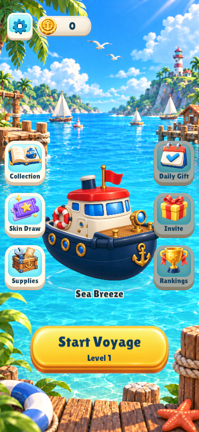
正式首页 · English · Game View 390×844
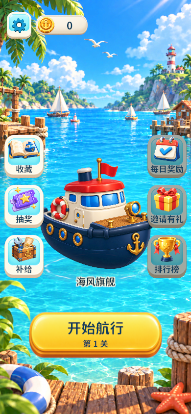
正式首页 · 中文 · Game View 390×844
收藏与场景／形象切换
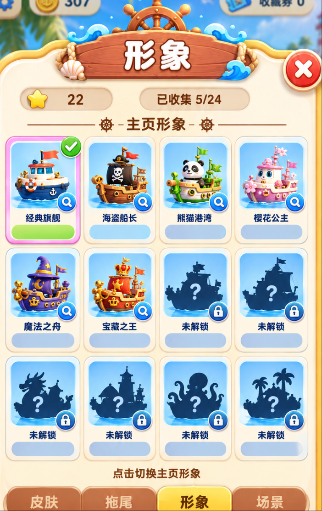
原形象页目标 · 390宽展示；当前另按用户后续确认增加获取渠道分组
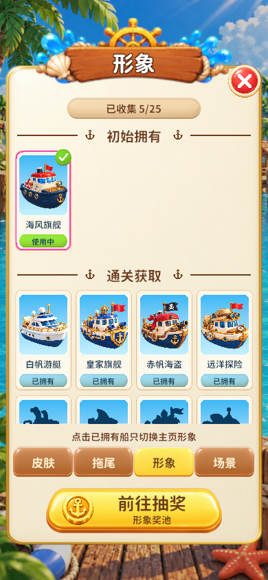
形象 · 实际服务计算拥有与选择，25关测试进度
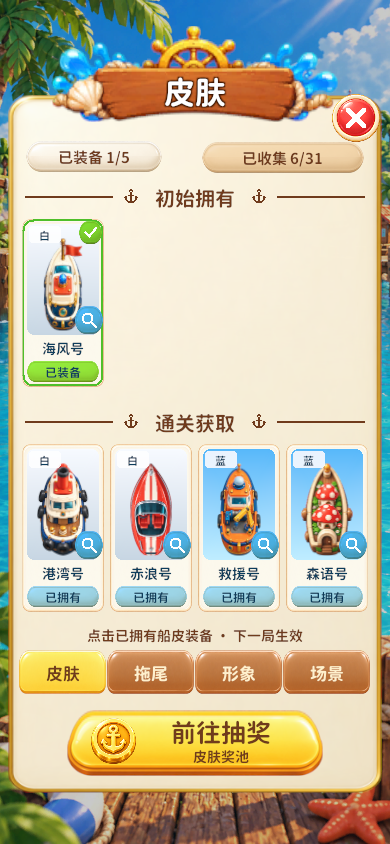
船皮 · 真实五槽与品质底色，默认／关卡／分享／抽奖分组
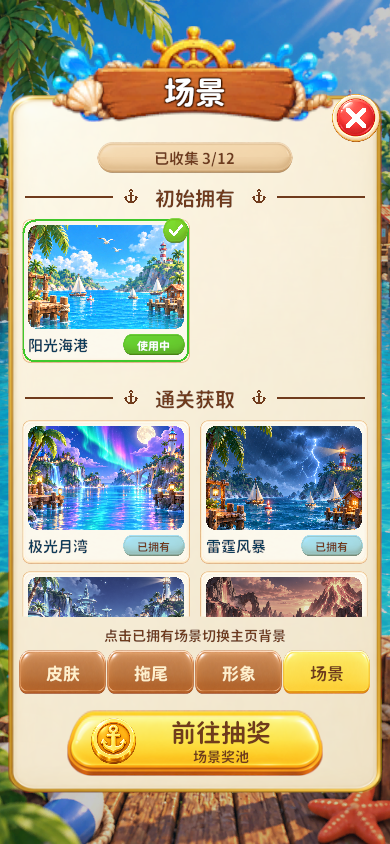
场景 · 真实关卡拥有与使用状态
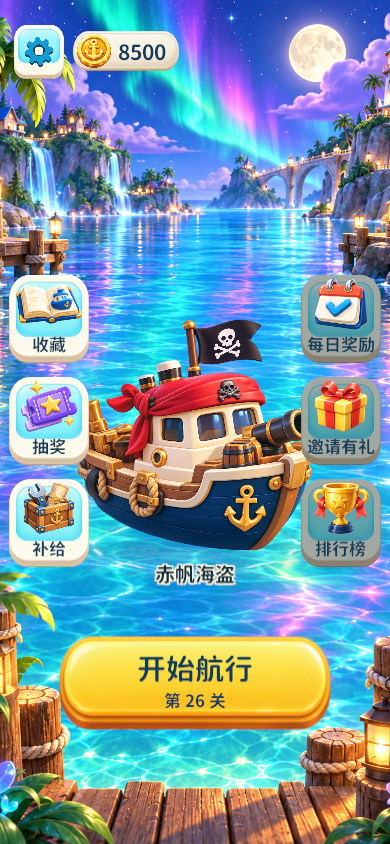
选择极光月湾及赤帆海盗后，首页实际同步
密集棋盘与实际路径拖尾
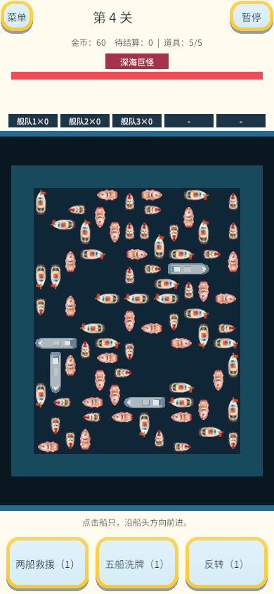
实际第4关 · 已装备新皮肤参与本局；局内HUD仍为既有灰盒
实际向上移动中的W01，暂停定格截图
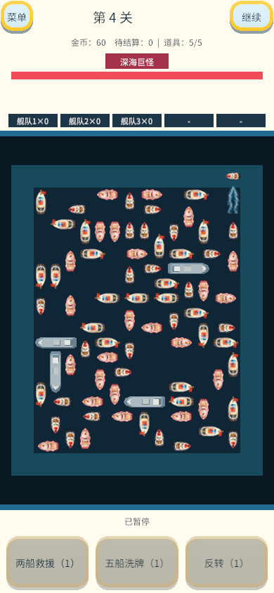
实际外围航道转弯，历史尾迹保留；其他三向见同目录
短屏与英文：原始360宽
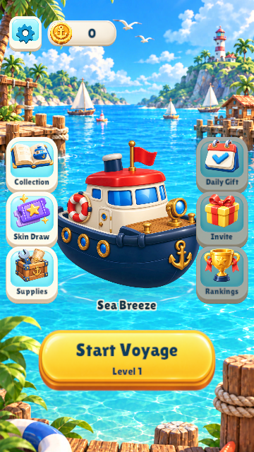
首页 · 360×640
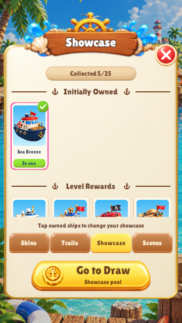
形象英文 · 360×640
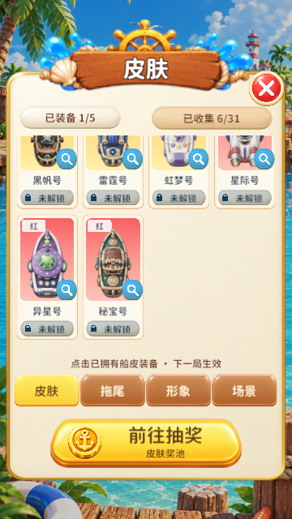
船皮列表末行与固定底栏 · 360×640
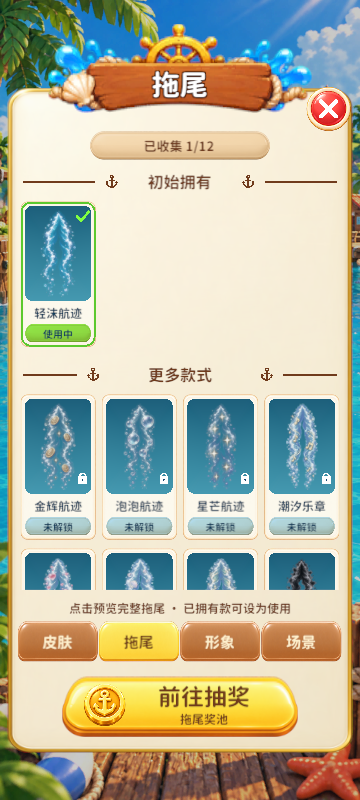
拖尾 · 360×800；未拥有款可试用但不授予
真实金币抽奖确认与保存
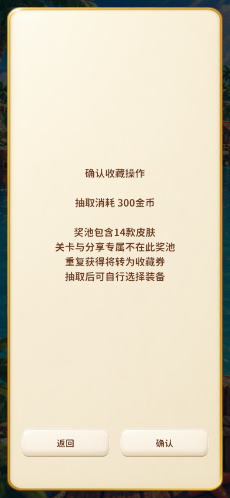
正式服务的单抽确认 · 内存测试钱包
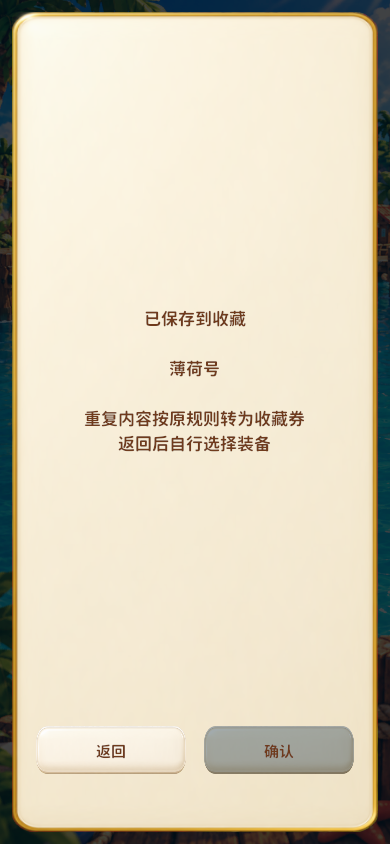
结果已保存；重复确认不重复扣款
分享授予、拖尾／形象／场景新奖池、移动端性能和真实充值尚未接入或验收。补给充值图为单独的设计候选，不混作本页运行证据。